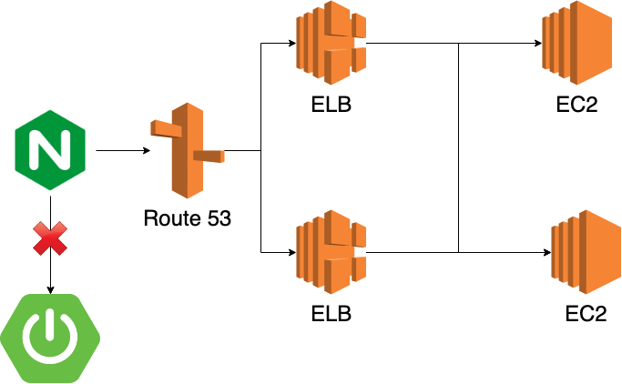

얼마 전에 서버를 새롭게 이전했다.
기존에 있던 local의 upstream server 대신에 새로운 서버로 업스트림을 걸어놨다.
1 | http { |
LB에 바로 도메인을 붙여도 되지만 롤백을 최대한 빨리하기 위해 기존 서버에서 LB로 업스트림 걸어놓았다.
- 만약 새로운 서버에서 문제가 생겼다고 가정
- 이 때 LB에 바로 도메인을 달아놓았다면…
2-1. 기존의 서버로 다시 도메인 변경
2-2. DNS 캐시가 날아갈 때까지 유저에게 장애 발생
2-3. 클라이언트의 설정에 따라서 DNS 캐시가 언제 날아갈지 모르는 상황… (과연 일반 유저들이 브라우저의 DNS 캐시 지우는 방법을 알고 있을까?) - 이 때 기존 서버는 내비두고 LB로 업스트림을 걸어놓았다면…
3-1. 기존 로컬 서버를 업스트림 서버로 변경
3-2. nginx -s reload
3-3. 수 초 이내로 원래 서버로 원복
Trouble
하지만 문제는 며칠 후 발생했다.
ELB의 DNS로 접속하면 잘 되는데 기존 서버 도메인으로 접속하면(LB를 upstream으로 걸어놓은) 1분 가까운 시간이 흐른 후에 502 Bad Gateway가 나는 것이었다.
우선 급한 마음에 nginx -s reload 명령어를 입력했더니 다시 또 정상 동작하는 것이었다.
Nginx의 Access Log까지는 정상적으로 남은 걸 보니 LB를 찾지 못해서 일정 시간동안 기다리다가 502를 뱉었던 것 같았다.
나는 딱히 설정을 바꾼 것도 없는데… 잘 동작하니 귀신이 곡할 노릇이었다.
ELB 동작 방식
Best Practices in Evaluating Elastic Load Balancing을 보면 다음과 같은 구문이 나온다.
The controller will also monitor the load balancers and manage the capacity that is used to handle the client requests.
The Elastic Load Balancing service will update the Domain Name System (DNS) record of the load balancer when it scales so that the new resources have their respective IP addresses registered in DNS.
The DNS record that is created includes a Time-to-Live (TTL) setting of 60 seconds, with the expectation that clients will re-lookup the DNS at least every 60 seconds.
컨트롤러는 로드 밸런서를 모니터링하고 클라이언트의 요청을 핸들링하는 capacity를 관리한다.
Elastic Load Balancing은 스케일링할 때 로드 밸런서의 DNS 레코드를 업데이트한다. (새로운 리소스의 IP는 DNS에 등록된다.)
DNS 레코드의 TTL은 60초로 세팅돼있고, 60초가 지나면 클라이언트는 다시 lookup한다.
ELB는 트래픽에 따라서 알아서 스케일링되는 모양이다.
또한 TTL은 60초이다.
따라서 ELB의 아이피 주소는 매우 유동적이다. (늘어났다가 줄어들었다가… 혹은 LB가 다운되면 새로 생성한다던지…)
Nginx 동작 방식
Using DNS for Service Discovery with NGINX and NGINX Plus
NGINX caches the DNS records until the next restart or configuration reload, ignoring the records’ TTL values.
NGINX는 restart나 reload가 발생할 때까지 DNS record를 캐시하고 record의 TTL을 무시한다.
즉, ELB의 TTL인 60초는 무시되고, 설정파일을 읽을 당시에 DNS Lookup이 진행되기 때문에 ELB Scaling이 진행된 후에는 정상 동작하리란 보장을 할 수 없다.
설정파일을 읽을 당시에 DNS Lookup을 통해 얻어온 LB의 IP 주소가 트래픽 감소에 의해 더 이상 유효하지 않은 IP 주소가 됐을 가능성이 높기 때문이다.
Shooting
Using DNS for Service Discovery with NGINX and NGINX Plus
When you use a variable to specify the domain name in the proxy_pass directive, NGINX re‑resolves the domain name when its TTL expires.
You must include the resolver directive to explicitly specify the name server (NGINX does not refer to /etc/resolv.conf).
By including the valid parameter to the resolver directive, you can tell NGINX to ignore the TTL and re‑resolve names at a specified frequency instead.
proxy_pass directive의 domain name에 변수를 명시할 경우, NGINX는 domain name의 TTL이 만료됐을 때 다시 resolve한다.
resolver directive에 name server를 꼭 명시해줘야한다. (NGINX는 /etc/resolv.conf 파일을 참조하지 않는다.)
resolver directive에 valid parameter를 명시하면 TTL을 무시하고 valid parameter의 주기로 다시 resolve한다.
우리가 해야할 일은 이제 다음과 같다.
/etc/resolv.conf파일을 참조하여 resolver directive에 name server를 명시해준다.1
2
3
4
5cat /etc/resolv.conf
# ; generated by /usr/sbin/dhclient-script
# search ap-northeast-2.compute.internal
# options timeout:2 attempts:5
# nameserver 10.12.0.2
1 | http { |
resolver directive에 valid parameter에 ELB DNS의 TTL인 60보다 작은 값을 세팅한다.
1
2
3
4
5
6
7
8http {
server {
resolver 10.12.0.2 valid=30s;
location / {
proxy_pass http://elb-dns.ap-northeast-2.elb.amazonaws.com;
}
}
}proxy_pass directive의 domain name에 변수를 명시한다.
1
2
3
4
5
6
7
8
9http {
server {
resolver 10.12.0.2 valid=30s;
location / {
set $elb-dns elb-dns.ap-northeast-2.elb.amazonaws.com;
proxy_pass http://$elb-dns;
}
}
}nginx -s reload를 통해 다운타임 없이 설정파일을 재적용한다.